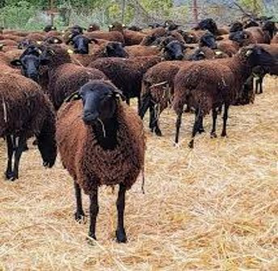
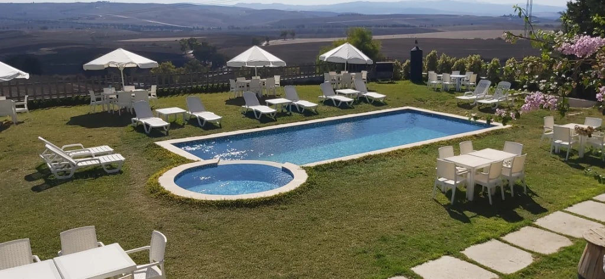
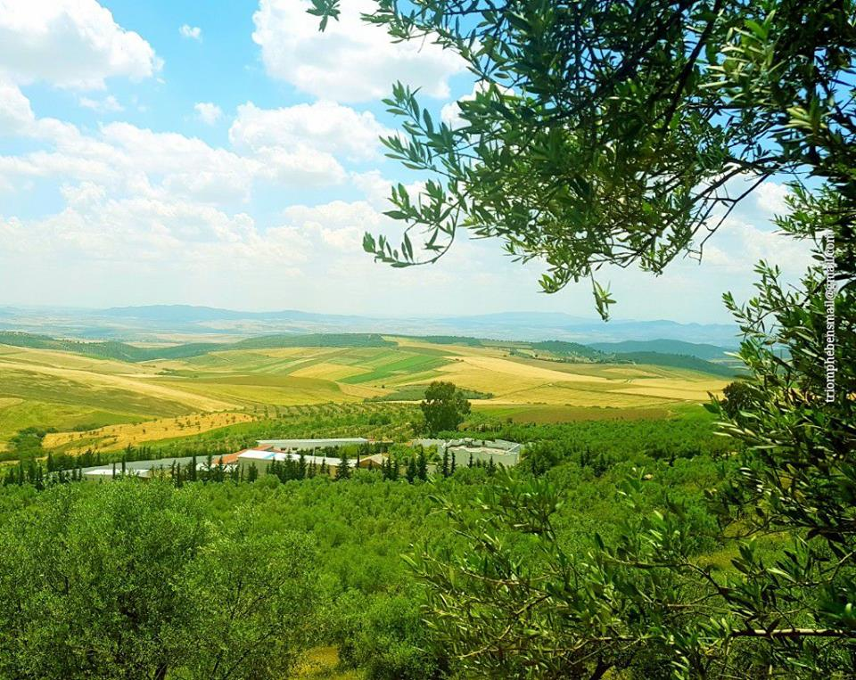
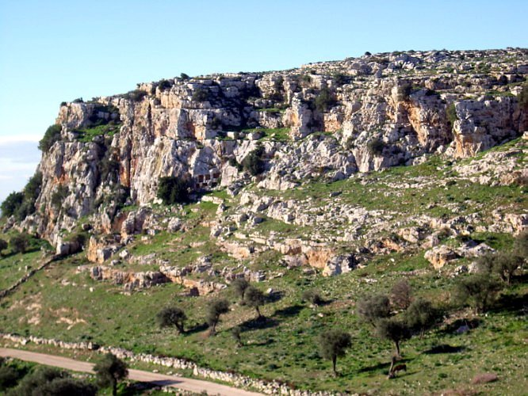
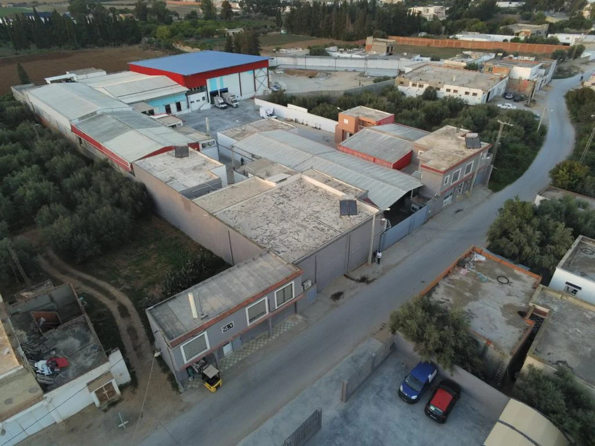

La race Noire de Thibar est une race ovine tunisienne créée localement, essentiellement pour faire face aux problèmes
d'intoxication liés à l'ingestion d’une plante spontanée très répandue dans la Tunisie septentrionale appelée le millepertuis
(Hyparicum perforatum) ou EL Hamra, nom couramment utilisé par les agriculteurs. En effet, le millepertuis provoque un phénomène
de photosensibilisation entraînant une forte mortalité saisonnière des animaux totalement blancs. Cette race NT est caractérisée
par des performances spécifiques ; ses aptitudes bouchères, ses caractéristiques des carcasses et de la viande représentent une
richesse qui doit être valorisée et conservée.
Caractéristiques Phénotypiques de la race NT :
Coloration de la toison : robe entièrement noire, sauf la tête, la gorge, la face interne de la queue et le périnée.
Tête : allongée, avec un front plein, subconcave, sans cornes.
Oreilles : minces, horizontales ou légèrement dressées.
Tronc : presque cylindrique.
Membres : fins et bien développés, adaptés aux terrains accidentés.
Poids moyen à la naissance : 3,4 kg.
Poids vif adulte : Mâles de 70 à 75 kg, Femelles de 50 à 60 kg.
Rendement en carcasse : de 43 à 50 %.
Les performances zootechniques incluent une bonne fécondité et une prolificité similaire aux autres races ovines. La race NT
permet la reproduction en saison et hors saison.

Les régions d’élevage de la race NT couvrent neuf gouvernorats représentant 16,65% du territoire national. Ces zones,
situées dans le nord de la Tunisie, comprennent Bizerte, Ariana, Manouba, Nabeul, Zaghouan, Béja, El Kef, Jendouba et Siliana.

Un circuit écotouristique dédié à la valorisation de la race Noire de Thibar permet de promouvoir le patrimoine agricole,
la gastronomie locale, et le tourisme durable. Ce circuit valorise la race NT, les pratiques d’élevage traditionnelles, et
l’identité culinaire de la région.
Ce circuit inclut les étapes suivantes :
Abattoir mobile de Béja (projet JESMED)
Abattoir Mobile (JESMED)
 Lycée Agricole de Thibar : Musée dédié à la race NT.
Lycée Agricole de Thibar : Musée dédié à la race NT.
Lycée Agricole Thibar
 Ferme Torkhani : Élevage extensif et pratiques écologiques.
Ferme Torkhani : Élevage extensif et pratiques écologiques.
Ferme Torkhani

Ferme Belle Vue : Dégustation de plats traditionnels préparés avec la viande locale.
Ferme Belle-Vue

Borj Lella : Borj Lella est une table d’hôte qui sert différents fromages au lait de brebis.
Chez Borj Lella on fabrique notre propre fromage artisanal.
Borj Lella
 Domaine Ben Ismail à Toukaber : Dégustation de viande NT et d’huiles locales.
Domaine Ben Ismail à Toukaber : Dégustation de viande NT et d’huiles locales.
Domaine Ben Ismail à Toukaber

Chaouach : Tourisme durable et gestion des écosystèmes pastoraux.
Chaouach

Montagne Zawya : Randonnées guidées dans les pâturages.
Montagne Zawya

Ce circuit valorise la viande de la race NT à travers des organismes spécialisés, notamment des abattoirs et des sociétés
de transformation et de distribution.
Carte de valorisation de la viande NT

Les organismes qui peuvent aider les éleveurs à la mise en valeur de la viande ovine produite par leurs exploitations :
Abattoir mobile à Béja : joue un role important pour garantir la tracabilité des animaux et des viandes ovine NT
 Société Laabidi des viandes : Joue un role important dans l'échages des experiances et commercialisation des viandes NT
Société Laabidi des viandes : Joue un role important dans l'échages des experiances et commercialisation des viandes NT

Société Farah : Joue un role important dans l'échages des experiances dans l'emballage et la commercialisation des viandes NT
 Institut national de la normalisation et la propriété industrielle (INNORPI) : joue un role important dans l'octroi d'un signe de qualité de la viande ovine NT
Direction Générale de la Production Agricole (DGPA) : l'organisme principal pour le dépot de cahier de charges de la viande NT pour l'octroi d'un indice de provence (IP) à la race NT
Institut national de la normalisation et la propriété industrielle (INNORPI) : joue un role important dans l'octroi d'un signe de qualité de la viande ovine NT
Direction Générale de la Production Agricole (DGPA) : l'organisme principal pour le dépot de cahier de charges de la viande NT pour l'octroi d'un indice de provence (IP) à la race NT
 Groupement Interprofessionnel des Viandes Rouges et du Lait (GIVLait) : organisme d'interprofession qui facilite la compréhension de cette filière et la crétion des liens entre les éleveurs et les autres organismes
Groupement Interprofessionnel des Viandes Rouges et du Lait (GIVLait) : organisme d'interprofession qui facilite la compréhension de cette filière et la crétion des liens entre les éleveurs et les autres organismes